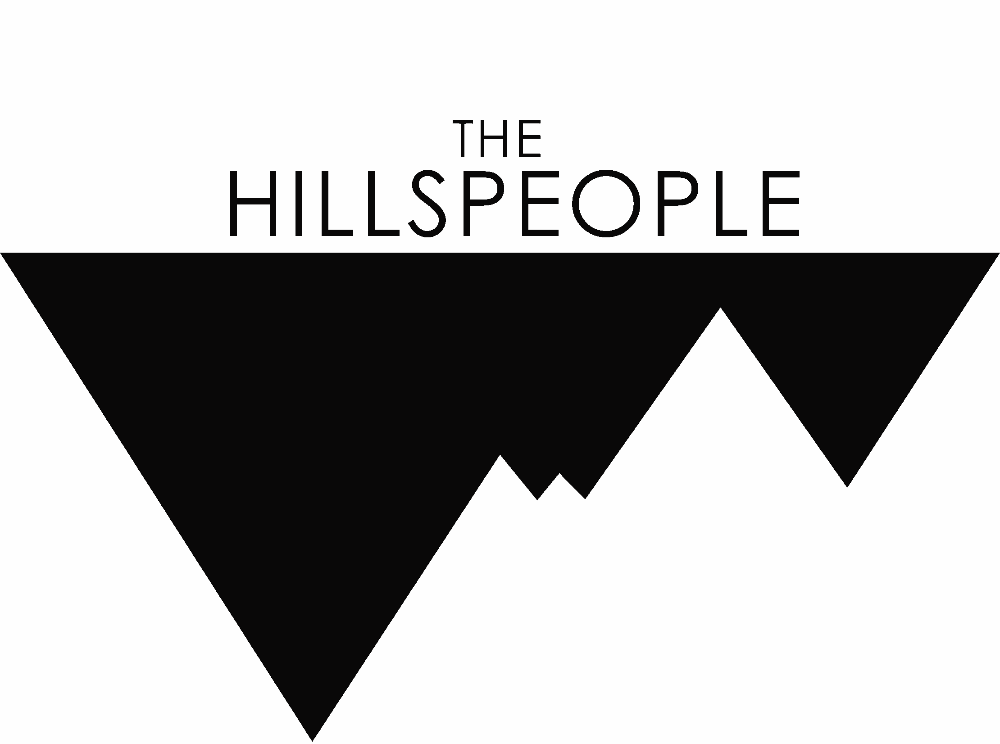

Visual Storyteller · Media Entrepreneur · Educator
Stories rooted in the hills I call home.
Bridging imagination, ideas and information through stories rooted in Northeast India, across film, branded content, documentaries and media education.
About
Bridging imagination and information.
I'm Tyrel Reuben Lyngdoh, a visual storyteller, media entrepreneur and communications consultant from Meghalaya, Northeast India. My work is driven by a belief in bridging imagination, ideas and information through stories rooted in the region I call home.
My journey in the media industry began in 2016 and has grown across creative direction, production and communications ever since. I've worked on feature films including Iewduh, Lorni – The Flaneur and Rwai Ka Shara, alongside commercial projects for brands like Toyota, NEXA, Ather, Wild Stone and Unilever Ayush. That work has taken me from production sets across the Khasi, Jaintia and Garo Hills to a content assignment in the United Kingdom with the Shillong Chamber Choir.
One of my earliest significant collaborations, with IFAD, Roger King and NESFAS, sharpened my interest in documenting food, agriculture, people and indigenous knowledge, an interest that still shapes much of my work today, including documentation of Meghalaya's globally recognised Living Root Bridges and the traditions connected to them.
As a filmmaker my approach stays raw, human and cinematic. My short film Ka Jingshemphang (The Knowing) marked an important step in establishing my own voice, and in 2019 I founded The Hillspeople Collective to build that voice into a wider creative and production practice.
“It is about documenting stories worth remembering, creating opportunities for others.”
Industries
Where the work lives.
Statistics
A decade, in numbers.
+
Years in Media
Feature Films
Students Trained
+
Partner Organisations
Milestones
2016 to now.
The turning points that shaped a decade-long practice.
No milestones in this category yet.
Collaborators
Trusted across sectors.
Brand & Commercial
Government & Development
Selected Work
Recent Frames
No projects yet — add your first above.
No projects in this category yet.
Education
Meghalaya Filmmakers Training Centre.
Est. 2023
Recognising the growing media industry's need for accessible, practical and industry-relevant training, I established the Meghalaya Filmmakers Training Centre in 2023. Close to 100 students have since been trained through courses, workshops and mentorship programmes in photography, videography, editing and mobile filmmaking.
I strongly advocate mobile filmmaking as one of the most accessible entry points into visual storytelling, encouraging young people to trust their creative instincts and recognise media as a viable livelihood.
Workshops, speaking & mentorship


Est. 2019
A creative and production company, built for Northeast India's stories.
In 2019 I founded The Hillspeople Collective, built around film production, creative direction, production management and communications. Through the Collective I've worked extensively with brands, government departments and development organisations across the region.
Contact
Let's tell a story worth remembering.
Tell me about your project, campaign, or collaboration, and I'll respond within two business days.
Based inShillong, Meghalaya
The fastest way to reach me is directly by email — I read and reply to every message myself.